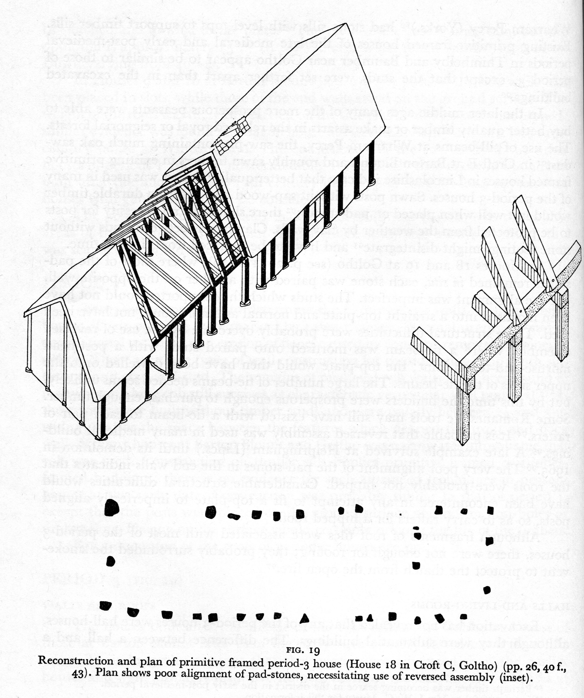
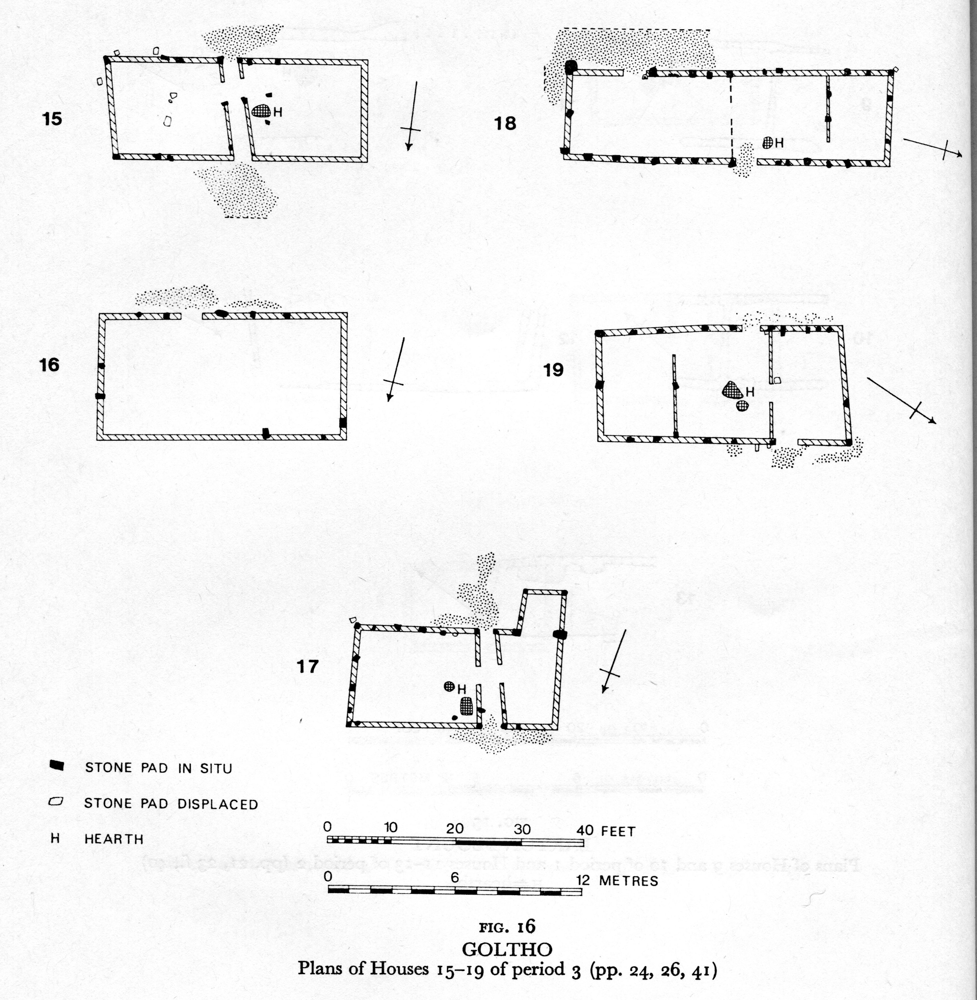
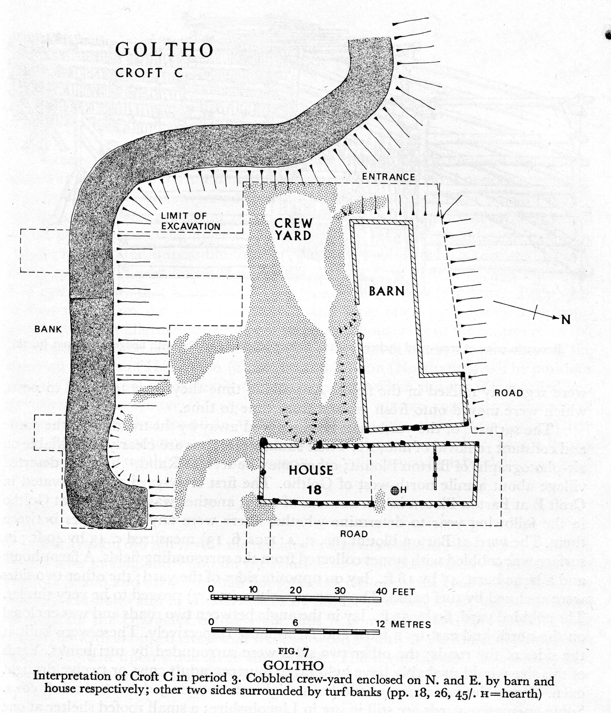
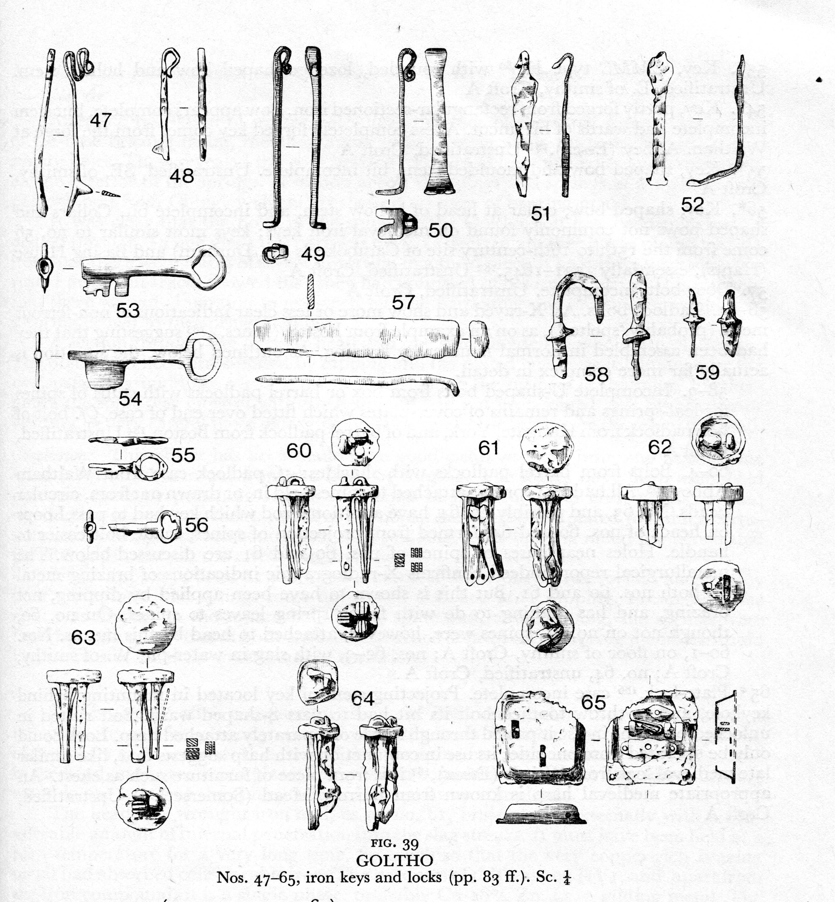

Croft A, Anglo-Saxon and late 11th-century houses
The first house that dates to the late 11th century (3), was approximately 24 x 9 ft. It was built similarly to the Anglo-Saxon houses, but instead of having its posts set into postholes, they were simply set on the ground surface; however, a wall on the interior of the house was made by setting thin posts into holes or slots.
This house had a living area with a hearth at one end (H), and a space for keeping animals at the other, separated by a wooden wall.
Two other buildings (4, 5) of approximately the same date in croft A were used for animal or human occupation, up until the late 12th century.
In the later Middle Ages, by in the mid-13th century, the inhabitants began to build more complex and sturdy structures. The posts were set on a base of padstones, which made them stronger and less likely to rot.

Crofts A and C, later medieval houses


In addition to houses, some of the crofts, such as croft C, contained large barns and there is evidence that this croft (and some of the others) was paved with large stones and used as a crew-yard, or enclosed area for cattle.
A number of keys and locks were found at Goltho, indicating that doors were sturdy and lockable. However, there was no trace of any window-glass.
